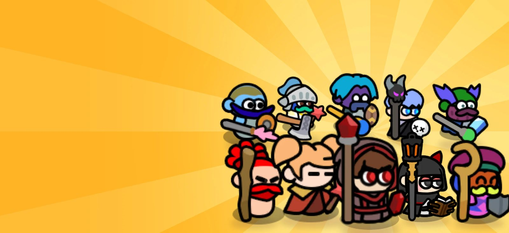

활활법사
2026.03 ~ 2026.10
몰려오는 적을 불꽃 마법으로 쓸어 내는 서바이버 액션 RPG. 1인 개발로 기획부터 출시까지 끝냈고, 클라우드 세이브와 계정 연동, 가챠와 확률 공개까지 라이브 서비스에 필요한 것을 혼자 갖췄습니다.
- 레벨업마다 마법 15종과 강화 17종을 골라 조합하는 전투. 영웅 25명, 장비 120종, 던전 4종과 100층 탑
- 몬스터 이동·분리·길찾기·충돌 검사를 Burst 잡(Job System) + Spatial Hashing 으로 옮겨 프레임 드랍 해결
- Firebase Auth·Realtime Database 클라우드 세이브, Apple·Google 로그인, 가챠 확률 공개
- 에디터 자동 플레이 시나리오 30여 개로 회귀 검증, 스토어 스크린샷도 같은 시나리오로 촬영
Google Play
App Store 심사 중
주요 기능
- 레벨업마다 마법 15종과 강화 17종 가운데 하나를 골라 나만의 조합을 만드는 전투
- 7개 지역 × 4단계 난이도, 영웅 25명, 장비 120종, 아티팩트 50종
- 던전 4종과 100층 시련의 탑
- 가챠와 확률 정보 공개, 패스, 7일 출석, 방치 보상, 우편함, 쿠폰
- 가이드 퀘스트 단계에 맞춰 로비 기능이 하나씩 열리는 FTUE
- 한국어·영어 현지화
기술 스택
- Unity 6, URP, C#
- Firebase (Auth, Realtime Database 클라우드 세이브, Remote Config, Crashlytics, App Check)
- Apple · Google 로그인
- LevelPlay (광고 수익화), Unity IAP (인앱 결제)
- Job System, Spatial Hashing, UniTask, R3, LitMotion, MemoryPack
- Addressables, Unity Localization
해결한 문제
- 몰려드는 몬스터 떼의 이동과 충돌 분리가 프레임 드랍을 만들어, 이동(IJobParallelFor)·분리·길찾기·충돌 검사를 Burst 컴파일 잡과 Spatial Hashing 으로 옮겨 해결
- Realtime Database 클라우드 세이브를 바뀐 부분만 쓰도록 바꿔 쓰기 비용과 GC 를 줄임
- Play 콘솔의 16KB 페이지 기기 경고에 맞춰 구글 로그인 네이티브 라이브러리를 NDK r28c 로 다시 빌드
- 애플 연동이 실패하던 문제를 기기 진단 로그로 추적해, SDK 가 인증 코드를 빈 값으로 보내던 원인을 찾아 고침
- 에디터 자동 플레이 시나리오 30여 개로 FTUE, 던전, 결제 흐름을 회귀 검증하고 스토어 스크린샷도 같은 시나리오로 촬영
- 에디터가 다른 플랫폼으로 컴파일된 채 빌드하면 알림 권한 같은 플랫폼 처리가 빠지던 문제를 빌드 스크립트에서 차단
개발 기간
2026.03 ~ 2026.10 (약 7개월, 1인 개발)